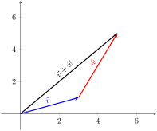

Let’s recall what we know about vectors in \(\R^2\text{.}\) Writing \(\vv = \langle x,y\rangle\) for the vector pointing from \((0,0)\) to \((x,y)\text{,}\) we define:
Scalar multiplication: \(c\langle x, y\rangle = \langle cx, cy\rangle\text{,}\) where \(c\) is a real number, or scalar.
We can then observe a number of properties enjoyed by these operations. In your first course, you may have observed some of these properties geometrically, using the “tip-to-tail” rule for vector addition, as shown in Figure 1.1.1

Figure1.1.1.
Vector addition is commutative. That is, for any vectors \(\vv = \langle a, b\rangle\) and \(\ww = \langle c,d\rangle\text{,}\) we have \(\vv+\ww = \ww+\vv\text{.}\)
This is true because addition is commutative for the real numbers:
Vector addition is associative. That is, for any vectors \(\uu = \langle a, b\rangle, \vv = \langle c, d\rangle\) and \(\ww = \langle p, q\rangle\text{,}\) we have
This tells us that placement of parentheses doesn’t matter, which is essential for extending addition (which is defined as an operation on two vectors) to sums of three or more vectors.
Again, this property is true because it is true for real numbers:
Vector addition has an identity element. This is a vector that has no effect when added to another vector, or in other words, the zero vector. Again, it inherits its property from the behaviour of the real number 0.
For any \(\vv=\langle a,b\rangle\text{,}\) the vector \(\zer = \langle 0,0\rangle\) satisfies \(\vv+\zer = \zer+\vv=\vv\text{:}\)
Every vector has an inverse with respect to addition, or, in other words, a negative. Given a vector \(\vv = \langle a, b\rangle\text{,}\) the vector \(-\vv = \langle -a, -b\rangle\) satisfies
Scalar multiplication is compatible with addition in two different ways. First, it is distributive over vector addition: for any scalar \(k\) and vectors \(\vv=\langle a, b\rangle, \ww = \langle c,d\rangle\text{,}\) we have \(k(\vv+\ww)=k\vv+k\ww\text{.}\)
Unsurprisingly, this property is inherited from the distributive property of the real numbers:
Second, scalar multiplication is also distributive with respect to scalar addition: for any scalars \(c\) and \(d\) and vector \(\vv\text{,}\) we have \((c+d)\vv=c\vv+d\vv\text{.}\)
Again, this is because real number addition is distributive:
\begin{align*}
(c+d)\langle a, b\rangle \amp = \langle (c+d)a,(c+d)b\rangle\\
\amp = \langle ca+da, cb+db\rangle \\
\amp = \langle ca, cb\rangle + \langle da, db\rangle\\
\amp c\langle a, b\rangle + d\langle a, b\rangle\text{.}
\end{align*}
Scalar multiplication is also associative. Given scalars \(c,d\) and a vector \(\vv=\langle a,b\rangle\text{,}\) we have \(c(d\vv) = (cd)\vv\text{.}\)
This is inherited from the associativity of real number multiplication:
Finally, there is a “normalization” result for scalar multiplication. For any vector \(\vv\text{,}\) we have \(1\vv = \vv\text{.}\) That is, the real number \(1\) acts as an identity element with respect to scalar multiplication. (You can check this one yourself.)
You might be wondering why we bother to list the last property above. It’s true, but why do we need it? One reason comes from basic algebra, and solving equations. Suppose we have the equation \(c\vv = \ww\text{,}\) where \(c\) is some nonzero scalar, and we want to solve for \(\vv\text{.}\) Very early in our algebra careers, we learn that to solve, we “divide by \(c\)”.
Division doesn’t quite make sense in this context, but it certainly does make sense to multiply both sides by \(1/c\text{,}\) the multiplicative inverse of \(c\text{.}\) We then have \(\left(\frac1c\right)(c\vv)=\left(\frac1c\right)\ww\text{,}\) and since scalar multiplication is associative, \(\left(frac1c \cdot c\right)\vv = \left(\frac1c\right)\ww\text{.}\) We know that \(\frac1c \cdot c = 1\text{,}\) so this boils down to \(1\vv=(1/c)\ww\text{.}\) It appears that we’ve solved the equation, but only if we know that \(1\vv = \vv\text{.}\)
For an example where this fails, take our vectors as above, but redefine the scalar multiplication as \(c\langle a, b\rangle = \langle ca, 0\rangle\text{.}\) The distributive and associative properties for scalar multiplication will still hold, but the normalization property fails. Algebra becomes very strange with this version of scalar multiplication. In particular, we can no longer conclude that if \(2\vv=2\ww\text{,}\) then \(\vv=\ww\text{!}\)
Exercise1.1.2.
Given an example of vectors \(\vv\) and \(\ww\) such that \(2\vv=2\ww\text{,}\) but \(\vv\neq \ww\text{,}\) if scalar multiplication is defined as above.
In a first course in linear algebra, these algebraic properties of vector addition and scalar multiplication are presented as a theorem. (After all, we have just demonstrated the truth of these results.) A second course in linear algebra (and in particular, abstract linear algebra), begins by taking that theorem and turning it into a definition. We will then do some exploration, to see if we can come up with some other examples that fit the definition; the significance of this is that we can expect the algebra in these examples to behave in essentially the same way as the vectors we’re familiar with.
Definition1.1.3.
A real vector space (or vector space over \(\R\)) is a nonempty set \(V\text{,}\) whose objects are called vectors, equipped with two operations:
Addition, which is a map from \(V\times V\) to \(V\) that associates each ordered pair of vectors \((\vv,\ww)\) to a vector \(\vv+\ww\text{,}\) called the sum of \(\vv\) and \(\ww\text{.}\)
Scalar multiplication, which is a map from \(\R\times V\) to \(V\) that associates each real number \(c\) and vector \(\vv\) to a vector \(c\vv\text{.}\)
The operations of addition and scalar multiplication are required to satisfy the following axioms:
A1.
If \(\uu,\vv\in V\text{,}\) then \(\uu+\vv\in V\text{.}\) (Closure under addition)
A2.
For all \(\uu,\vv\in V\text{,}\)\(\uu+\vv=\vv+\uu\text{.}\) (Commutativity of addition)
A3.
For all \(\uu,\vv,\ww\in V\text{,}\)\(\uu+(\vv+\ww)=(\uu+\vv)+\ww\text{.}\) (Associativity of addition)
A4.
There exists an element \(\zer\in V\) such that \(\vv+\zer=\vv\) for each \(\vv\in V\text{.}\) (Existence of a zero vector)
A5.
For each \(\vv\in V\text{,}\) there exists a vector \(-\vv\in V\) such that \(\vv+(-\vv)=\zer\text{.}\) (Existence of negatives)
S1.
If \(\vv\in V\text{,}\) then \(c\vv\in V\) for all \(c\in\R\text{.}\) (Closure under scalar multiplication)
S2.
For all \(c\in \R\) and \(\vv,\ww\in V\text{,}\)\(c(\vv+\ww)=c\vv+c\ww\text{.}\) (Distribution over vector addition)
S3.
For all \(a,b\in\R\) and \(\vv\in V\text{,}\)\((a+b)\vv=a\vv+b\vv\text{.}\) (Distribution over scalar addition)
S4.
For all \(a,b\in \R\) and \(\vv\in V\text{,}\)\(a(b\vv)=(ab)\vv\text{.}\) (Associativity of scalar multiplication)
S5.
For all \(\vv\in V\text{,}\)\(1\vv=\vv\text{.}\) (Normalization of scalar multiplication)
Note that a zero vector must exist in every vector space. This simple observation is a key component of many proofs and counterexamples in linear algebra. In general, we may define a vector space whose scalars belong to a field\(\mathbb{F}\text{.}\) A field is a set of objects whose algebraic properties are modelled after those of the real numbers.
The axioms for a field are not all that different than those for a vector space. The main difference is that in a field, multiplication is defined between elements of the field (and produces another element of the field), while scalar multiplication combines elements of two different sets.
Definition1.1.4.
A field is a set \(\mathbb{F}\text{,}\) equipped with two binary operations \(\mathbb{F}\times\mathbb{F} \to \mathbb{F}\text{:}\)
A1: for all \(a,b\in \mathbb{F}, a+b=b+a\text{.}\)
A2: for all \(a,b,c\in\mathbb{F}, a+(b+c)=(a+b)+c\)
A3: there exists an element \(0\in\mathbb{F}\) such that \(0+a=a\) for all \(a\in\mathbb{F}\text{.}\)
A4: for each \(a\in\mathbb{F}\text{,}\) there exists an element \(-a\in\mathbb{F}\) such that \(-a+a=0\text{.}\)
M1: for all \(a,b\in\mathbb{F}\text{,}\)\(a\cdot b=b\cdot a\text{.}\)
M2: for all \(a,b,c\in\mathbb{F}\text{,}\)\(a\cdot (b\cdot c)=(a\cdot b)\cdot c\text{.}\)
M3: there exists an element \(1\in\mathbb{F}\) such that \(1\cdot a=a\) for all \(a\in \mathbb{F}\text{.}\)
M4: for each \(a\in\mathbb{F}\) with \(a\neq 0\text{,}\) there exists an element \(1/a\in\mathbb{F}\) such that \(1/a\cdot a = 1\text{.}\)
D: for all \(a,b,c\in \mathbb{F}\text{,}\)\(a\cdot (b+c) = a\cdot b+a\cdot c\text{.}\)
Note how the axioms for multiplication in a field mirror the addition axioms much more closely than in a vector space. The only difference is the fact that there is one element without a multiplicative inverse; namely, the zero element.
While it is possible to study linear algebra over finite fields (like the integers modulo a prime number) we will only consider two fields: the real numbers \(\R\text{,}\) and the complex numbers \(\C\text{.}\)
Exercise1.1.5.
Before we move on, let’s look at one example involving finite fields. Let \(\mathbb{Z}_n=\{0,1,2,\ldots, n-1\}\text{,}\) with addition and multiplication defined modulo \(n\text{.}\) (For example, \(3+5=1\) in \(\mathbb{Z}_7\text{,}\) since \(8\equiv 1 \pmod{7}\text{.}\))
You will need to recall properties of congruence from your introduction to proofs course.
(b)
Show that \(\mathbb{Z}_6\) is not a field.
(c)
Why does this work for \(n=5\) but not for \(n=6\text{?}\) For which \(n\) do you think \(\mathbb{Z}_n\) will be a field?
A vector space whose scalars are complex numbers will be called a complex vector space. While many students are initially intimidated by the complex numbers, most results in linear algebra work exactly the same over \(\C\) as they do over \(\R\text{.}\) And where the results differ, things are usually easier with complex numbers, owing in part to the fact that all complex polynomials can be completely factored.
To help us gain familiarity with the abstract nature of Definition 1.1.3, let us consider some basic examples.
Example1.1.6.
The following are examples of vector spaces. We leave verification of axioms as an exercise. (Verification will follow a process very similar to the discussion at the beginning of this section.)
The set \(\R^n\) of \(n\)-tuples \((x_1,x_2,\ldots, x_n)\) of real numbers, where we define
We will also often use \(\R^n\) to refer to the vector space of \(1\times n\) column matrices \(\bbm x_1\\x_2\\\vdots\\x_n\ebm\text{,}\) where addition and scalar multiplication are defined as for matrices (and the same as the above, with the only difference being the way in which we choose to write our vectors). If the distinction between \(n\)-tuples and column matrices is ever important, it will be made clear.
The set \(\R^\infty\) of all sequences of real numbers
Addition and scalar multiplication are defined in the same way as \(\R^n\text{;}\) the only difference is that elements of \(\R^\infty\) contain infinitely many entries.
The set \(M_{mn}(\R)\) of \(m\times n\) matrices, equipped with the usual matrix addition and scalar multiplication.
The zero vector is the polynomial \(0=0+0x+\cdots + 0x^n\text{.}\)
This is the same as the addition and scalar multiplication we get for functions in general, using the “pointwise evaluation” definition: for polynomials \(p\) and \(q\) and a scalar \(c\text{,}\) we have \((p+q)(x)=p(x)+q(x)\) and \((cp)(x)=c\cdot p(x)\text{.}\)
Notice that although this feels like a very different example, the vector space \(P_n(\R)\) is in fact very similar to \(\R^n\) (or rather, \(\R^{n+1}\text{,}\) to be precise). If we associate the polynomial \(a_0+a_1x+\cdots + a_nx^n\) with the vector \(\langle a_0,a_1,\ldots, a_n\rangle\text{,}\) the addition and scalar multiplication for either space behaves in exactly the same way. We will make this observation precise in Section 2.3.
The set \(P(\R)\) of all polynomials of any degree. The algebra works the same as it does in \(P_n(\R)\text{,}\) but there is an important difference: in both \(P_n(\R)\) and \(\R^n\text{,}\) every element in the set can be generated by setting values for a finite collection of coefficients. (In \(P_n(\R)\text{,}\) every polynomial \(a_0+a_1x+\cdots =a_nx^n\) can be obtained by choosing values for the \(n+1\) coefficients \(a_0,a_1\ldots, a_n\text{.}\)) But if we remove the restriction on the degree of our polynomials, there is then no limit on the number of coefficients we might need. (Even if any individual polynomial has a finite number of coefficients!)
The set \(F[a,b]\) of all functions \(f:[a,b]\to \R\text{,}\) where we define \((f+g)(x)=f(x)+g(x)\) and \((cf)(x)=c(f(x))\text{.}\) The zero function is the function satisfying \(0(x)=0\) for all \(x\in [a,b]\text{,}\) and the negative of a function \(f\) is given by \((-f)(x)=-f(x)\) for all \(x\in [a,b]\text{.}\)
Note that while the vector space \(P(\R)\) has an infinite nature that \(P_n(\R)\) does not, the vector space \(F[a,b]\) is somehow more infinite! Using the language of Section 1.7, we can say that \(P_n(\R)\) is finite dimensional, while \(P(\R)\) and \(F[a,b]\) are infinite dimensional. In a more advanced course, one might make a further distinction: the dimension of \(P(\R)\) is countably infinite, while the dimension of \(F[a,b]\) is uncountable.
Other common examples of vector spaces can be found online; for example, on Wikipedia 1 . It is also interesting to try to think of less common examples.
ExercisesExercises
1.
Can you think of a way to define a vector space structure on the set \(V=(0,\infty)\) of all positive real numbers?
(a)
How should we define addition and scalar multiplication? Since the usual addition and scalar multiplication wont work, let’s denote addition by \(x\oplus y\text{,}\) for \(x,y\in V\text{,}\) and scalar multiplication by \(c\odot x\text{,}\) for \(c\in\R\) and \(x\in V\text{.}\)
Note: you can format any math in your answers using LaTeX, by putting a $ before and after the math. For example, \(x\oplus y\) is $x\oplus y$, and \(x\odot y\) is $x\odot y$.
Remember that an inverse \(-x\) must satisfy \(x\oplus (-x)=e\text{,}\) where \(e\) is the identity element. What is \(e\text{,}\) and how is “addition” defined?
(e)
Show that, for any \(c\in \R\) and \(x,y\in V\text{,}\)
Show that for any \(c,d\in \R\) and \(x\in V\text{,}\)
\begin{equation*}
(c+d)\odot x = c\odot x\oplus d\odot x\text{.}
\end{equation*}
(g)
Show that for any \(c,d\in\R\) and \(x\in V\text{,}\)\(c\odot (d\odot x)=(cd)\odot x\text{.}\)
(h)
Show that \(1\odot x=x\) for any \(x\in V\text{.}\)
2.
True or false: the set of all polynomials with real number coefficients and degree less than or equal to three is a vector space, using the usual polynomial addition and scalar multiplication.
True.
This is the vector space \(P_3(\R)\) from Example 1.1.6.
False.
This is the vector space \(P_3(\R)\) from Example 1.1.6.
3.
True or false: the set of all polynomials with real number coefficients and degree greater than or equal to three, together with the zero polynomial, is a vector space, using the usual polynomial addition and scalar multiplication.
True.
The set is not closed under addition. What happens if you add the polynomials \(x^3+x\) and \(-x^3+x\text{?}\)
False.
The set is not closed under addition. What happens if you add the polynomials \(x^3+x\) and \(-x^3+x\text{?}\)
Remember that a vector space must be closed under the operations of addition and scalar multiplication.
4.
True or false: the set of all vectors \(\vv = \langle a, b\rangle\) of unit length (that is, such that \(\sqrt{a^2+b^2}=1\)) is a vector space with respect to the usual addition and scalar multiplication in \(\R^2\text{.}\)
True.
The zero vector does not have unit length. Also, the sum of two unit vectors will usually not be a unit vector.
False.
The zero vector does not have unit length. Also, the sum of two unit vectors will usually not be a unit vector.
5.
Let \(V={\mathbb R}\text{.}\) For \(u,v \in V\) and \(a\in{\mathbb R}\) define vector addition by \(u \boxplus v := u+v + 3\) and scalar multiplication by \(a \boxdot u := au + 3a - 3\text{.}\) It can be shown that \((V,\boxplus,\boxdot)\) is a vector space over the scalar field \(\mathbb R\text{.}\) Find the following:
(a) The sum \(5\boxplus -6\)
(b) The scalar multiple \(8\boxdot 5\)
(c) The zero vector, \(\underline{0}_V\)
(d) The additive inverse of \(x\text{,}\)\(\boxminus x\)
6.
Let \(V=(-5,\infty)\text{.}\) For \(u,v \in V\) and \(a\in{\mathbb R}\) define vector addition by \(u \boxplus v := uv + 5(u+v)+20\) and scalar multiplication by \(a \boxdot u := (u + 5)^a - 5\text{.}\) It can be shown that \((V,\boxplus,\boxdot)\) is a vector space over the scalar field \(\mathbb R\text{.}\) Find the following:
(a) The sum \(-1\boxplus 1\)
(b) The scalar multiple \(2\boxdot -1\)
(c) The additive inverse of \(-1\text{,}\)\(\boxminus -1\)
(d) The zero vector, \(\underline{0}_V\)
(e) The additive inverse of \(x\text{,}\)\(\boxminus x\)